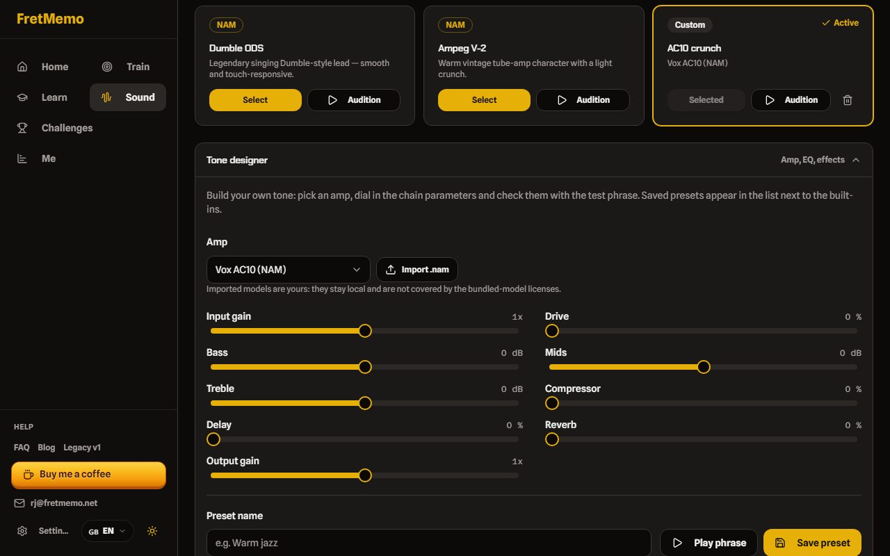

FretMemo's Sound tab is a free online amp simulator. It has 8 presets built on sampled guitars and 7 NAM amp models, a "Tone designer" with amp, EQ and effects, and a "Live input" mode that plays your own guitar through the active sound in the browser. You can import your own A2 .nam file too, and it stays on your device.
I built the Sound tab so that every exercise in FretMemo plays through one switchable sound. Once that chain existed, letting you plug in and play through it was the obvious next thing to add.

Why a guitar trainer has an amp simulator
Practice apps tend to sound like a cheap keyboard. That's tolerable for a quiz, but if the ear-training note or the backing loop sounds nothing like a guitar, you're training your ear on the wrong sound.
So FretMemo has one sound engine that the whole app shares. Ear-training prompts, the Chord Library, improv drills and backing loops, and the notes in fretboard drills all play through whatever preset you pick on the Sound page. Your Songs uses it too, in "Guitar sound" mode, which the Guitar Pro file viewer post explains. A few things stay outside it: metronome and count-in clicks, Rhythm Dojo drums, the soundfont playback of songs, and mic calibration.
Presets and NAM amp models
There are 8 built-in presets. "Classic guitar" is the default, a nylon-string voice. The other seven are electric: "Clean JC-120", "Clean Deluxe", "Crunch AC10", "Lead JCM800", "High Gain 5153", "Dumble ODS" and "Ampeg V-2". Each card has "Select", and "Audition", which plays an A chord and a short A minor pentatonic lick so you can compare presets by ear.
The electric presets run on NAM amp models of the Fender Deluxe Reverb, Roland JC-120, Vox AC10, Marshall JCM800, Boosted EVH 5153, Dumble Overdrive Special and Ampeg V-2. All seven are A2 captures from TONE3000 under the MIT license, and they run in the browser on neural-amp-modeler-wasm 3.0.7, also MIT. At most 3 models are loaded at once, and if one fails, the engine falls back to its classic stage instead of going silent.
The bundled models capture the amp alone, and an amp heard without a cabinet sounds fizzy. So a fixed cabinet stand-in follows them: five filters, namely a highpass at 80 Hz, +3 dB at 200 Hz, a -6 dB shelf from 1.5 kHz and lowpasses at 4.8 and 6.5 kHz. It's an EQ curve and not a cabinet impulse response. Imported .nam models skip it.
The guitar itself is sampled. "Classic guitar" uses 42 nylon notes from the University of Iowa (a Raimundo 118 played by Brian Penkrot in 2011), released for use in any project without restrictions. Every NAM preset uses 28 electric notes from Karoryfer's "Black and Green Guitars", a green Gretsch Anniversary, released as CC0. Until the samples load, a simple synth plays instead.
The tone designer
Open "Tone designer" and you get an "Amp" menu with the seven NAM amps and a classic option, plus nine sliders:
- "Input gain" and "Output gain", 0 to 2×
- "Drive" and "Compressor", 0% to 100%
- "Bass", "Mids" and "Treble", ±12 dB each (a shelf at 200 Hz, a peak at 1 kHz, a shelf at 3.2 kHz)
- "Delay", mix 0% to 100%, about 280 ms with feedback 0.35
- "Reverb", mix 0% to 100%, with a synthetic impulse response
You hear changes live, about 180 ms after you stop dragging. "Play phrase" plays a test phrase, and "Save preset" stores the tone under a name in your browser, where it appears next to the built-ins with a "Custom" badge.
Importing your own .nam file
If you have a NAM capture you like, "Import .nam" loads it as an amp. It has to be in the A2 (SlimmableContainer) format and 15 MB or smaller; older files are refused with a message saying only A2 files are supported. The model is stored only in your browser's IndexedDB. The designer puts it plainly: "Imported models are yours: they stay local and are not covered by the bundled-model licenses." Imported models skip the cabinet stand-in, so you hear the model as it is.
How to play your guitar through it
- Open Sound on fretmemo.net. It's "Sound" in the sidebar on desktop and in the bottom bar on a phone.
- Press "Audition" on a few presets and "Select" the one you like.
- Optionally open "Tone designer", pick an "Amp" or press "Import .nam", move the sliders, type a name and press "Save preset".
- Put on headphones. Connect the guitar through an audio interface, or put a microphone in front of it.
- Open "Live input", press "Enable live input" and allow microphone access in the browser.
- Watch the level meter. If it starts to feed back, press "Emergency mute".
- When you're done, switch live input off on the Sound page. Leaving the page does not turn it off.
For live input FretMemo turns off the browser's echo cancellation, noise suppression and auto gain, because they cut long sustains. With echo cancellation off, sound from speakers can loop back into the mic, which is why the page shows a "Headphones on!" warning. Your saved presets also show up in Your Songs: in "Guitar sound" mode, "Track voices" lets you give each track a built-in or saved preset, which is a nicer sound to practice a song with a looped section against.
Limits
- No latency calibration for live input, so how much delay you hear depends on your device and setup.
- The microphone stays on after you leave the Sound page, until you switch it off there.
- The bundled models are amp-only, and the cabinet is a five-filter EQ, not an impulse response.
- Imported .nam files must be A2 and at most 15 MB.
- Sound files are cached on first use, but only 12 entries are kept, so I can't promise the full sound set offline.
- In Your Songs, one song can use at most 3 different NAM amps in "Guitar sound" mode.
FAQ
Is there a free online amp simulator that runs in the browser?
Yes. FretMemo's Sound tab is free and needs no account. It has 8 presets, 7 of them built on NAM amp models, a tone designer with 9 sliders, and Live input to play your guitar through the active preset.
Can I load a .nam file in the browser?
Yes, if it is an A2 (SlimmableContainer) file of 15 MB or less. Use Import .nam in FretMemo's Tone designer. The model is stored only in your browser on this device.
Can I play guitar through an amp sim in my browser with an audio interface?
Yes. FretMemo's Live input takes a microphone or an audio interface and routes it through the selected preset. Use headphones, and note that live input has no latency calibration.
Which amps are in FretMemo's amp simulator?
Seven NAM amp models: Fender Deluxe Reverb, Roland JC-120, Vox AC10, Marshall JCM800, Boosted EVH 5153, Dumble Overdrive Special and Ampeg V-2. They are A2 captures from TONE3000 under the MIT license.
Try the amp simulator
Audition the presets, build a tone in the designer, or plug in and play through it with headphones.
Open Sound Free, no account, runs in the browser.